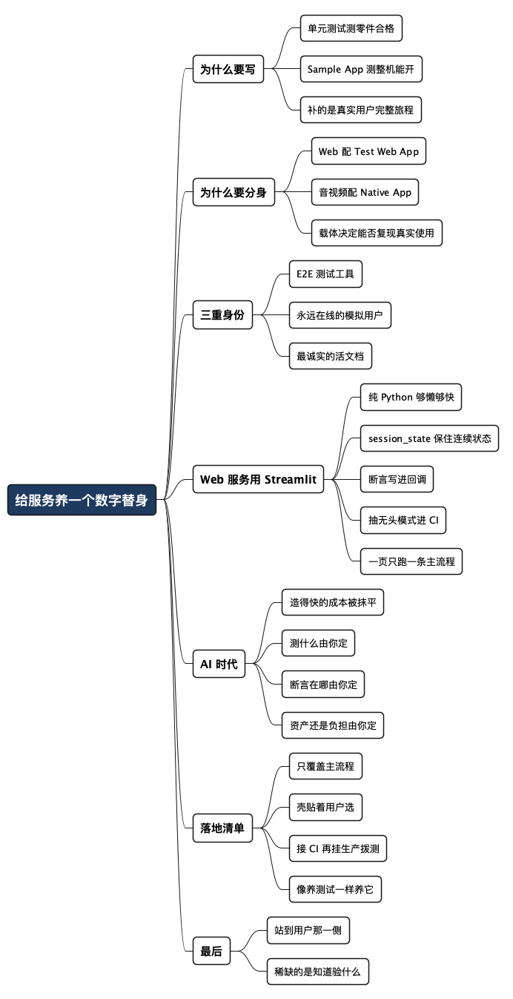

给你的服务养一个"数字替身"：AI 时代为什么要写 Sample App
Posted on 日 05 7月 2026 in Tech
| Abstract | 给你的服务养一个"数字替身"：AI 时代为什么要写 Sample App |
|---|---|
| Authors | Walter Fan |
| Category | Tech |
| Version | v1.0 |
| Updated | 2026-07-05 |
| License | CC-BY-NC-ND 4.0 |
给你的服务养一个"数字替身"：AI 时代为什么要写 Sample App
我做后端和 SDK 快二十年，交付过不少服务：有 REST API，有消息网关，也有一堆 WebRTC 相关的 SDK。踩过的坑五花八门，但有一类最气人——服务本身没问题，接口一个个测都过，可真到用户手里就是不对劲。
后来我养成一个习惯：每交付一个服务，就顺手给它配一个能把主流程从头到尾跑一遍的小程序。Web Service 就配一个 Test Web App，音视频应用就配一个 Native App。它不测某个函数、某个接口,它干的是一件更朴素的事——像一个真用户那样,把你的东西完整用一遍。
这篇想说清楚一件事:这个 Sample App 不是可有可无的 demo,它是你服务的"数字替身"——既是 E2E 测试工具,也是一个永远在线的模拟用户,还是你能写出来的最诚实的一份文档。 AI 时代它更该写,因为写它的成本几乎归零了,但要不要养、往哪养,依然得你拍板。
- 它不是给客户看的"演示 demo",而是给你自己用的"验收替身"。
- 它不替代单元测试,它补的是单元测试永远够不着的那一段:真实用户的完整旅程。
单元测试测得再绿,也测不出"用起来不对劲"
先说个我反复遇到的场景。
一个服务,单元测试覆盖率 85%,集成测试全绿,CI 一片祥和。上线,用户报障:第一次登录后拿到的 token,过五分钟就失效,得重登一次才正常。
我们的测试里没有这个 bug——因为每个测试用例都是从干净状态起步:new 一个 client,调一个接口,断言,销毁。没有哪个测试模拟"一个用户开着 App 用了五分钟"这种连续过程。而真实用户,恰恰是连续的。
单元测试擅长回答"这个零件对不对",Sample App 回答的是另一个问题:这些零件装在一起、被一个人连续用半小时,还对不对?
单元测试测的是"零件合格",Sample App 测的是"整机能开"。 一辆车每个螺丝都达标,不等于这车能上路。
古人说纸上得来终觉浅,绝知此事要躬行。放到软件上一样:接口文档写得再漂亮,断言写得再严密,都不如真拿一个"人"去走一遍主流程来得踏实。Sample App 就是那个替你躬行的人。
为什么要"分身":Web 配 Web App,音视频配 Native App
有人会问:我有 Postman、有 curl、有一堆自动化脚本,还要写个 App 干嘛?
因为载体决定了你能不能复现真实使用。curl 能发请求,但它复现不了浏览器里的一次真实会话;脚本能调音视频 SDK,但它跑不出真机上采集、编码、传输、渲染的完整链路。你测什么东西,就得用离用户最近的那个壳去测。
| 你的服务是 | 配什么 Sample App | 因为它要复现 |
|---|---|---|
| Web Service / REST API | Test Web App(浏览器里跑) | 真实的登录态、Cookie、CORS、前端调用时序 |
| 音视频 / 实时通信 | Native App(真机跑) | 摄像头/麦克风采集、编解码、网络抖动、回声消除 |
| 消息 / 推送 | 常驻的客户端 | 长连接保活、断线重连、消息乱序与去重 |
| SDK / 库 | 一个真实调用它的小应用 | 真实的初始化顺序、生命周期、多线程调用 |
我做 WebRTC 那几年对这点体会最深。你在服务端把 SFU 转发逻辑测得再干净,都测不出一件事:真机上,弱网切换 Wi-Fi 到 4G 的那一秒,画面会不会卡死、声音会不会飘。 这种问题只有一个真的 Native App、拿一台真手机、在电梯里进出走两趟,才照得出来。
这个 Sample App 的好处不仅于此，它也是给调用你的服务的客户端应用的一份参考实现，有问题时拿这个示例应用来重现问题也很方便。
所以不是"要不要写 App"的问题,而是"你的用户在什么壳里用你的东西,你就得用同一个壳去验"。
它的三重身份:测试工具、模拟用户、活文档
养熟了你会发现,这个 Sample App 一个人干了三份活。
- 它是 E2E 测试工具:把它的主流程接进 CI,每次发版自动跑一遍"登录 → 创建 → 操作 → 退出"的完整旅程。这条线绿了,你才敢说"能用",而不只是"编译过了"。
- 它是永远在线的模拟用户:让它定时在生产环境跑一圈(拨测 / smoke test),它就成了你的第一个用户,而且是不睡觉、不抱怨、出事第一时间告诉你的那种。用户还没醒,它已经替你发现登录挂了。
- 它是最诚实的一份文档:文档会过期,注释会撒谎,但一个能跑起来的 Sample App 不会。新人接手时,与其读十页 API 说明,不如把 Sample App 跑一遍——代码怎么调、参数怎么传、流程什么顺序,它全给你演一遍。 这份文档永远和代码同步,因为它就是代码。
一个东西同时是测试、是监控、是文档,还各自都称职,这种"一鱼三吃"的投入产出比,在工程里不多见。
最常用的场景:给 Web Service 写个 Streamlit Sample App
Web Service 是我们平时打交道最多的一类。我给它配 Sample App 的技术栈,现在基本只选一个——Streamlit。
原因很简单:够懒。它是纯 Python,不用碰 HTML/CSS/JS,不用起前端工程,pip install streamlit 之后几十行就能跑出一个带表单、按钮、状态显示的页面。对一个"给自己用的验收替身"来说,Streamlit 那点"不够灵活"的缺点根本不算缺点——我要的是十分钟能跑起来,不是做产品。
一个最小骨架长这样(把你服务的登录 + 一次核心调用串起来):
# sample_app.py —— 运行: poetry run streamlit run sample_app.py
import streamlit as st
import requests
BASE_URL = st.text_input("服务地址", "http://localhost:8080")
st.title("订单服务 · Sample App")
# 1) 用 session_state 保住登录态,模拟"一个用户连续用"
if "token" not in st.session_state:
st.session_state.token = None
with st.form("login"):
user = st.text_input("用户名")
pwd = st.text_input("密码", type="password")
if st.form_submit_button("登录"):
r = requests.post(f"{BASE_URL}/login",
json={"user": user, "pwd": pwd}, timeout=5)
r.raise_for_status()
st.session_state.token = r.json()["token"]
st.success("登录成功")
# 2) 登录后才能走主流程
if st.session_state.token:
headers = {"Authorization": f"Bearer {st.session_state.token}"}
if st.button("下一单(核心流程)"):
with st.status("正在下单…") as status:
r = requests.post(f"{BASE_URL}/orders",
json={"item": "coffee", "qty": 1},
headers=headers, timeout=5)
r.raise_for_status()
order = r.json()
# 3) 关键一步:下断言,别只看"没报错"
assert order["status"] == "created", f"状态不对: {order}"
status.update(label=f"下单成功: {order['id']}", state="complete")
st.json(order)
就这么点代码,三重身份全占齐了:手点几下是活文档(演示怎么登录、怎么带 token 下单);那几个 assert 是测试;把它跑起来对着生产地址点一遍,就是最原始的模拟用户。
结合我踩过的坑,几条 Streamlit Sample App 的最佳实践:
-
用
st.session_state保住"连续状态"。 这是 Streamlit Sample App 最容易踩、也最值钱的一点。Streamlit 每次交互都会从头重跑整个脚本,你不显式存到session_state,token、登录态、上一步结果全会丢。而"保住连续状态"恰恰是 Sample App 相对 curl 的核心价值——它能复现"一个用户用了五分钟",curl 不能。 -
把断言写进按钮回调,别只看返回码。
r.raise_for_status()只挡 HTTP 错误码;真正的业务 bug(状态机不对、字段缺失、金额算错)得靠你自己的assert。每修一个线上 bug,回来补一条 assert,Sample App 才会越用越值钱。 -
配置外置,别把地址和密码写死。 服务地址用
st.text_input或st.secrets,密码走st.secrets/ 环境变量,绝不硬编码进代码。这样同一个 App 能一键切 dev / staging / 生产,也不会把口令提交进 Git。 -
抽出"无头模式",让它能进 CI。 把每个
requests调用抽成纯函数(login()、create_order()),Streamlit 页面只是薄薄一层 UI 壳。这样同一套流程逻辑,既能人手点(调试、演示),也能被pytest直接调(进 CI 跑 E2E)——一份流程,两种跑法,不用维护两套。 -
一页只跑一条主流程。 Streamlit 写着写着容易越堆越多。克制住,一个 Sample App 只盯一条核心路径;流程多了,宁可拆成
pages/多页,也别把一页塞成控制台。
一句话:
Streamlit 的价值不是"能做出多漂亮的界面",而是"让写 Sample App 这件事懒到你没借口不写"。
示例 App 的代码要够直接，够简单，好理解，好修改，能随着代码的改进而自动演进。
配套一个能跑的 Order Service(零依赖版)
光有 Sample App、没有被测的服务,读者跑不起来。所以这里附一个能直接 python3 跑起来的示例 Order Service,和上面的 Streamlit App 接口完全对上——/login 换 token,/orders 带 token 下单。
为了让你不用装任何东西,我故意只用了 Python 标准库(http.server),连 Flask、FastAPI 都不需要:
# order_service.py —— 运行: poetry run python order_service.py (监听 http://localhost:8080)
# 只用标准库,不需要 pip install。教学示例:密码明文比对、数据存内存,生产别这么写。
import json, secrets, uuid
from http.server import BaseHTTPRequestHandler, ThreadingHTTPServer
USERS = {"alice": "password"} # 假用户库(生产该用数据库 + 密码哈希)
TOKENS = {} # token -> username
ORDERS = {} # order_id -> order
class Handler(BaseHTTPRequestHandler):
def _send(self, code, payload):
body = json.dumps(payload).encode("utf-8")
self.send_response(code)
self.send_header("Content-Type", "application/json")
self.send_header("Content-Length", str(len(body)))
self.end_headers()
self.wfile.write(body)
def _read_json(self):
length = int(self.headers.get("Content-Length", 0))
return json.loads(self.rfile.read(length) or b"{}") if length else {}
def _auth_user(self):
header = self.headers.get("Authorization", "")
return TOKENS.get(header[7:]) if header.startswith("Bearer ") else None
def do_POST(self):
if self.path == "/login":
d = self._read_json()
if USERS.get(d.get("user")) != d.get("pwd"):
return self._send(401, {"error": "用户名或密码错误"})
token = secrets.token_hex(16)
TOKENS[token] = d["user"]
return self._send(200, {"token": token})
if self.path == "/orders":
user = self._auth_user()
if not user:
return self._send(401, {"error": "未登录或 token 无效"})
d = self._read_json()
order = {"id": uuid.uuid4().hex[:8], "user": user,
"item": d.get("item"), "qty": d.get("qty", 1),
"status": "created"}
ORDERS[order["id"]] = order
return self._send(201, order)
self._send(404, {"error": "not found"})
if __name__ == "__main__":
print("Order Service: http://localhost:8080 (Ctrl+C 退出)")
ThreadingHTTPServer(("0.0.0.0", 8080), Handler).serve_forever()
跑起来只要几步(依赖用 Poetry 管理,只需 streamlit 和 requests):
# pyproject.toml
[project]
name = "sample-app"
version = "0.1.0"
requires-python = ">=3.10,<3.14"
dependencies = [
"streamlit (>=1.40,<2.0)",
"requests (>=2.31,<3.0)",
]
[tool.poetry]
package-mode = false
# 0. 装依赖(需要 Python 3.10+)
poetry install
# 1. 起服务(一个终端)
poetry run python order_service.py
# 2. 起 Sample App(另一个终端)
poetry run streamlit run sample_app.py
# 3. 浏览器里用 alice / password 登录,点"下一单",看它跑通主流程
这套代码我本地实测跑通了:用 alice / password 登录拿到 token,带 token 下单返回 status: "created";不带 token 或密码错误都返回 401——正好触发 Sample App 里那句 assert order["status"] == "created"。你把服务端故意改坏(比如让 /orders 返回 status: "pending"),Sample App 就会当场红给你看。这就是"模拟用户"替你把关的那一下。
AI 时代,它更值得写——但方向盘得你握
放在几年前,我不敢轻易劝人写 Sample App。因为写它是有成本的:一个像样的 Test Web App,登录、状态管理、界面,零零碎碎也得一两天;一个 Native App 更贵。为了"测试"去养一个 App,老板会问你 ROI。
现在不一样了。你把 API 定义、把主流程描述丢给 AI,一个能跑的 Test Web App 骨架几分钟就出来了。写 Sample App 最大的那道成本门槛,基本被 AI 抹平了。 这恰恰是我现在敢到处安利它的原因——过去"不划算"的事,今天顺手就能做。
但有一点没变,而且更重要了:方向盘得握在你手里。
- 测什么主流程,是你定的。 AI 不知道你这个服务最要命的那条路径是登录续期,还是并发下单,还是弱网重连——那是你踩过坑才知道的。
- 在哪一步下断言,是你定的。 AI 会给你生成一堆"能跑通就算过"的乐观路径;真正值钱的断言,是你根据线上事故补出来的那几条。
- 它是资产还是负担,是你定的。 一个没人维护、天天挂红的 Sample App,比没有还糟——它会训练团队学会忽略红灯。养它,就得像养测试一样认真。
AI 负责把它造得快,你负责让它测得对。造得快是它的活,测得对是你的活,别搞反了。
落地清单:怎么养一个不会烂掉的 Sample App
给一套我自己在用的做法,取向是"轻、真、常跑"。
-
只覆盖主流程,别贪全 挑出用户 80% 时间在走的那条路径(比如"登录 → 进房间 → 收发音视频 → 离开"),先把这一条跑通跑稳。想覆盖所有分支的 Sample App,最后一定烂掉。
-
壳要贴着用户选 Web 服务用浏览器里的 Test Web App,音视频/实时通信用真机 Native App,SDK 用一个真实调用它的小应用。离用户越近,照出的妖越真。
-
接进 CI,再挂上生产拨测 发版时它是 E2E 测试(挡住"整机开不了"的版本);上线后它是 smoke test(每隔几分钟替你在生产跑一圈)。一个 App,测试和监控两头都用上。
-
像养测试一样养它
- 它挂了要有人管,红灯不许过夜——红灯过夜三次,团队就学会无视红灯了;
- 断言随事故增长:每修一个线上 bug,顺手在 Sample App 里补一条"它下次别再溜过去"的检查;
- AI 帮你写、帮你改,但最后跑一遍、确认它测的是真问题,这一步别外包。
一句话:
Sample App 是你服务的第一个用户,你得替这个用户,把他最在乎的那条路走通、盯牢。 只造不养,它就从资产变成一块天天报假警的破锣。
最后一句
我们这行有个老毛病:测试写得很勤,却常常测的是"我希望它怎么被用",而不是"它真的怎么被用"。Sample App 的价值,就是逼你站到用户那一侧,老老实实把主流程走一遍。
AI 时代,造一个这样的替身几乎不要钱了。真正稀缺的,不再是"能不能写出来",而是你知不知道该让它替你走哪条路、在哪一步替你把关——那来自你踩过的坑、扛过的线上事故、半夜被叫醒的那几次。
工具越来越会造替身,越会造,越显出一件事:知道该验什么的那个人,还是你。
全文思维导图
@startmindmap
<style>
mindmapDiagram {
node {
BackgroundColor #F8F9FA
RoundCorner 10
Padding 10
FontSize 13
}
:depth(0) {
BackgroundColor #1E3A5F
FontColor white
FontSize 18
FontStyle bold
}
:depth(1) {
FontSize 15
FontStyle bold
}
:depth(2) {
FontSize 13
}
}
</style>
* 给服务养一个数字替身
** 为什么要写
*** 单元测试测零件合格
*** Sample App 测整机能开
*** 补的是真实用户完整旅程
** 为什么要分身
*** Web 配 Test Web App
*** 音视频配 Native App
*** 载体决定能否复现真实使用
** 三重身份
*** E2E 测试工具
*** 永远在线的模拟用户
*** 最诚实的活文档
** Web 服务用 Streamlit
*** 纯 Python 够懒够快
*** session_state 保住连续状态
*** 断言写进回调
*** 抽无头模式进 CI
*** 一页只跑一条主流程
** AI 时代
*** 造得快的成本被抹平
*** 测什么由你定
*** 断言在哪由你定
*** 资产还是负担由你定
** 落地清单
*** 只覆盖主流程
*** 壳贴着用户选
*** 接 CI 再挂生产拨测
*** 像养测试一样养它
** 最后
*** 站到用户那一侧
*** 稀缺的是知道验什么
@endmindmap

本作品采用知识共享署名-非商业性使用-禁止演绎 4.0 国际许可协议进行许可。 欢迎在我的个人网站 https://www.fanyamin.com 访问原文并评论。